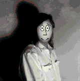

I just learned about a technique for graphically representing points in n-dimensional
space, first presented in 1973 (I guess I'm a little behind) by a Harvard statistician,
H. Chernoff. Representing points in two or three dimensions is pretty straightforward,
but what about data points in, say, ten dimensions? Chernoff's approach was to use
cartoon faces, with each dimensional parameter determining a facial feature. One
parameter determines eye size, for instance; another regulates eyebrow slant, another
determines the position of the mouth, and so on. I was struck dumb by the power of the
idea. Humans have a built-in feature integration and recognition ability that lets us
intuitively track and correlate changing facial features with no conscious effort, and
Chernoff's technique elegantly capitalizes on this ability.
The possible uses for these "Chernoff faces" are many and varied. In his book
Computers, Pattern, Chaos, and Beauty , Clifford Pickover talks about a number of
possible applications: the elucidation of high-level statistical concepts, uses in air
traffic control and aircraft piloting, educational applications, and many more. In one
particularly illuminating example he uses the faces to characterize sound. He runs the
sound data through an auto-correlation function (for the gory details, see his book)
and then uses the first ten points of the resulting data set to control the faces. As
examples heshows the faces generated by the sounds s , sh , z , and v , sounds which
are very similar. The resulting faces, though, are easily and immediately
distinguishable. As Pickover points out, this correlation between sounds and
appearance of the faces immediately suggests the possibility of using the faces as
feedback devices for helping severely hearing-impaired people to modify their
vocalizations. To learn a particular sound, they would try to produce the same Chernoff
face as that produced by a hearing person vocalizing the sound.
There are a few things worth noting about these faces. First of all, children respond
just as well as adults to the faces. Since facial recognition capabilities develop in
infancy, that's really not surprising, but it does mean that the faces have very broad
application possibilities. I'd also bet that they're freer of cultural bias than many
interface elements, which broadens their possible uses even more. Second, the faces
probably aren't appropriate for quantitative analysis; if you need to get the exact value
of a parameter, use a gauge. But they're great for high-level cognitive discrimination,
especially for tracking qualitative changes in multiple variables through time. Third,
because they're human faces, they could contain emotional connotations that have
nothing whatever to do with the data they represent. Imagine a face used to track water
levels and pump pressures in a nuclear power plant getting happier and happier as the
plant approaches meltdown. Time for some facial calibration, I'd say.
Included on the Developer Essentials CD is my version of Pickover's face routine. It
takes as arguments a pointer to a rect and a pointer to an array of 10 bytes, and it
draws the resulting face in the current port, scaled to the rect. See the code for more
details. One really cool thing is that if ten dimensions aren't enough, you can simply
add more detail to the picture: hair maybe, or ears. The hardest part is coming up with
meaningful 10-D data.
What's really interesting is how this technique and others like it capitalize on the kind
of processing that we already do automatically: you don't have to learn to discriminate
faces; you already know how, and you do it without even trying. So even while some
part of your brain is busily integrating facial features, your conscious mind is still
free to deal with other, higher-level tasks. All the best interfaces do this to some
degree, by simulating some part of what we call reality. (For instance, everyone's
favorite desktop model simulates a flat, bounded environment with overlapping two-
dimensional areas, something we're very familiar with in the real world through our
interactions with tabletops and paper.) A convincing simulation, or even one that
captures essential parts of the reality (like the Macintosh desktop), is an incredibly
powerful thing.
Human interfaces (so far humans are the predominant, market-driving users of
computers) can take advantage of many things: our ability to maintain internal mental
maps, our built-in image processing, our kinesthetic awareness of space, and so on.
All these things have been finely tuned by a zillion years of evolution, so why not use
them? Effective human interfaces are overwhelmingly visual and tactile, precisely
because vision and touch are the primary senses we use to interact with the world we
know so well. (For a dog I suppose a good interface would have to be heavily auditory
and olfactory:
sniff a file to get info; when something you search for is found, it whines so you can
locate it; system errors smell like flea shampoo.)
New interfaces are trying to capitalize even further on what we already know how to
do. Xerox PARC's latest experimental interface, the Information Visualizer, uses 3-D
real-time animation and represents information as directly manipulable 3-D objects.
You can "pick up" a data structure and look at it from all angles, using your built-in
spatial skills to help make sense of large bodies of information. PenPoint, Go
Corporation's recently announced pen-based operating system, takes advantage of,
among other things, our familiarity with pencils and notebooks. (I guess it's not recent
anymore, is it? It's still February in here.)
The goal of an interface is to make using the computer easier and more intuitive. What
more direct way than to simulate on the computer things that people already know how
to work with? A really interesting question is whether simulation is a necessary part
of a good interface, but it's a question without an answer yet, at least as far as I know.
In the meantime, while you're programming your next whiz-bang interface,
remember to occasionally look beyond the next crash or whether you remembered to
unlock that handle. There are many, many things that all people are already good at:
take advantage of them.
DAVE JOHNSON, our technical buckstopper, has been with Apple for three years.
Before becoming an official stopper-of- the-buck, he worked on PostScript printers
in Apple's software testing group. His interest in computers dates back to his college
days at Humboldt State University, where he majored in energy systems engineering,
and minored in everything else he could think of (it was a seven-year stay). He's also
our resident juggler, who will juggle anything or anybody--and has. Actually, Dave
has always been a show-biz kind of guy; as a kid, he was into monster makeup, which
led him to monster-making and puppeteering at Lucasfilm's Industrial Light and
Magic. (You've seen his work in such flicks asSpaceballs , The Witches of Eastwick ,
and Inner Space ; he was also an On-Set Duck Mechanic for Howard the Duck .) When
not buckstopping and juggling, he programs the Macintosh (screen savers, gratuitous
fractal programs, artificial life simulations: nothing useful), hangs out with his wife
and dogs, reads as much as possible, and pushes all available limits, both real and
imagined.*